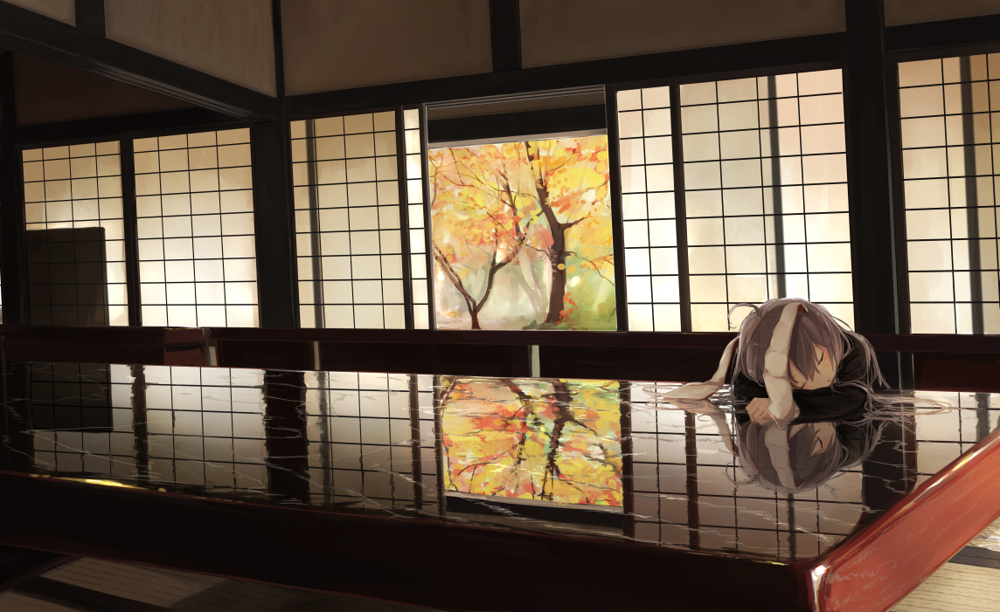

这个网站发布页感觉如何？一开始本来打算从零开始开发纯手写代码来着，后来发觉某些地方还是这样比较好。
比如在一定制作部分均采取了使用框架来进行开发，毕竟大量使用框架还是可以增加自己使用熟练度的。
虽然我个人不是学习后端的程序员，但是在我所可能的地方，我还是会尽力去学习的。
我想，在这里保存一些我自己制作的项目，肯定还是不错的。毕竟电脑还是容易出问题的，上次硬盘废了没了那么多东西哭了好久。
基本上就是这样了，这就是我这个首页想要说的东西。来张美图结尾。

休息的铃仙
2021/7/13
10:55:57
这个网站发布页感觉如何？一开始本来打算从零开始开发纯手写代码来着，后来发觉某些地方还是这样比较好。
比如在一定制作部分均采取了使用框架来进行开发，毕竟大量使用框架还是可以增加自己使用熟练度的。
虽然我个人不是学习后端的程序员，但是在我所可能的地方，我还是会尽力去学习的。
我想，在这里保存一些我自己制作的项目，肯定还是不错的。毕竟电脑还是容易出问题的，上次硬盘废了没了那么多东西哭了好久。
基本上就是这样了，这就是我这个首页想要说的东西。来张美图结尾。
休息的铃仙